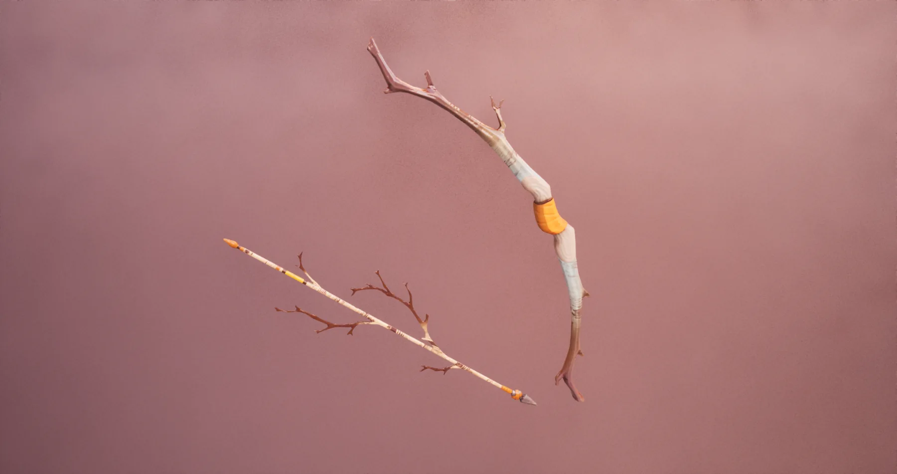
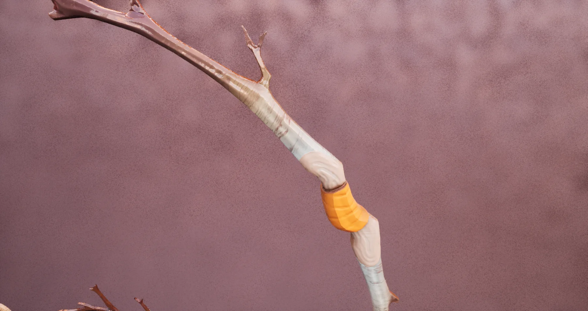
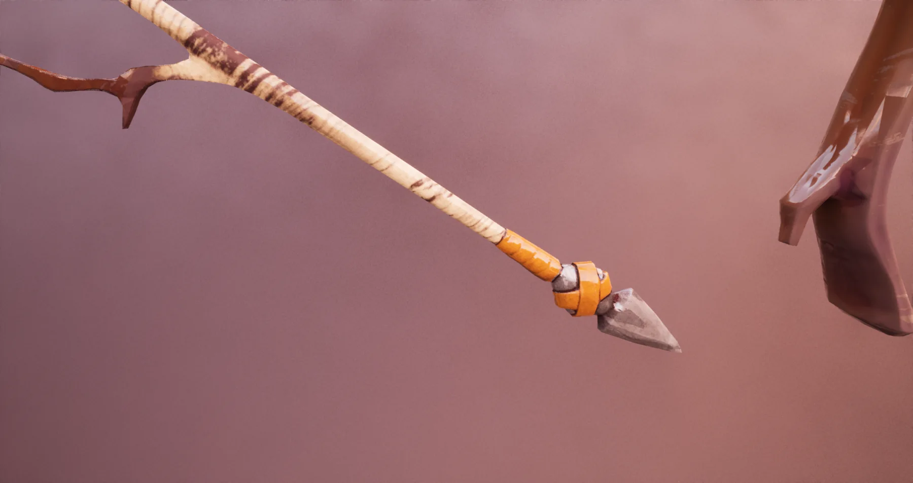
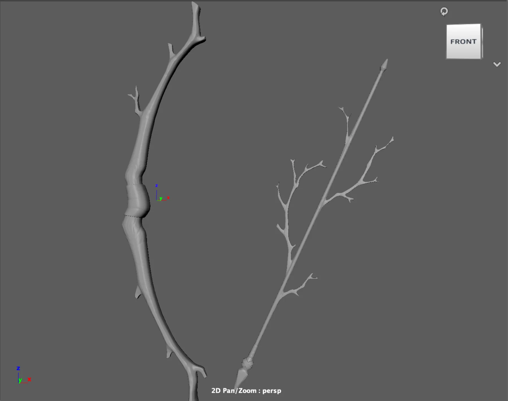
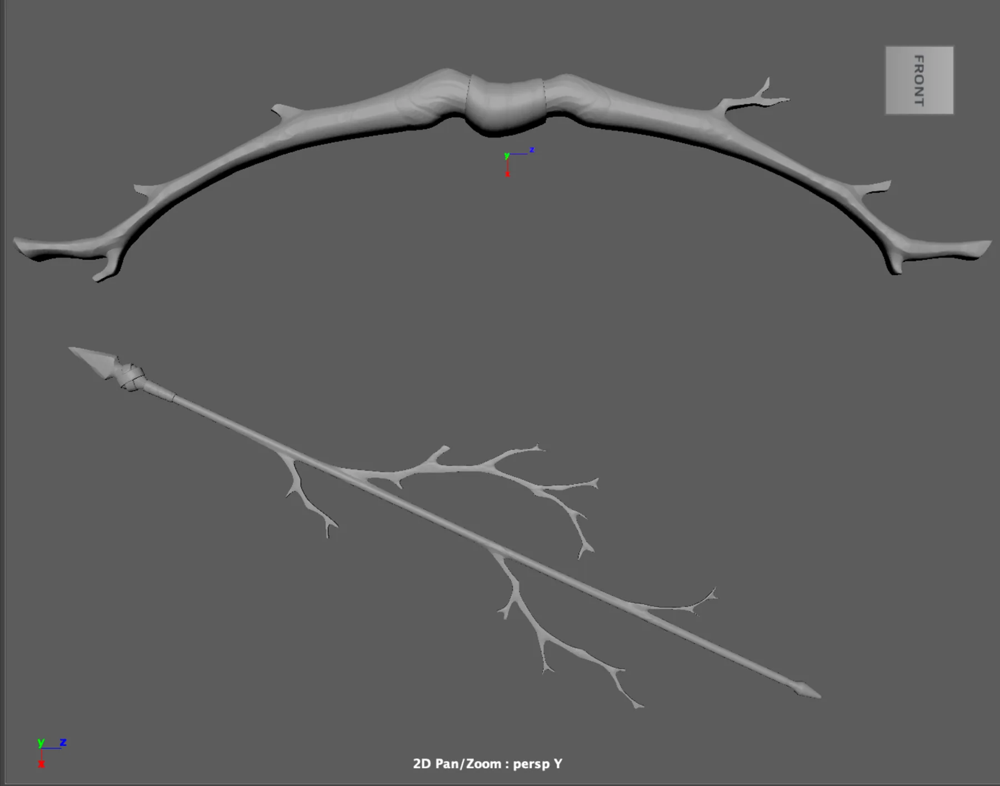
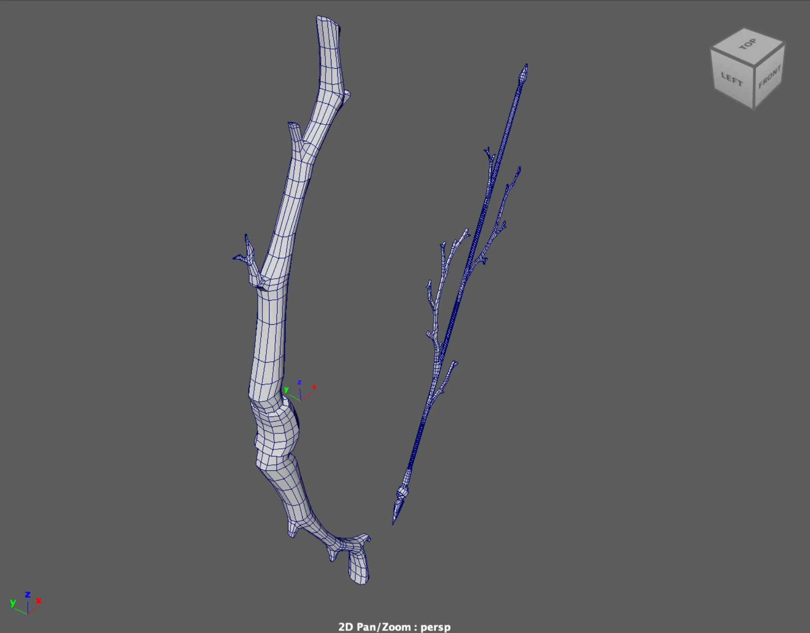
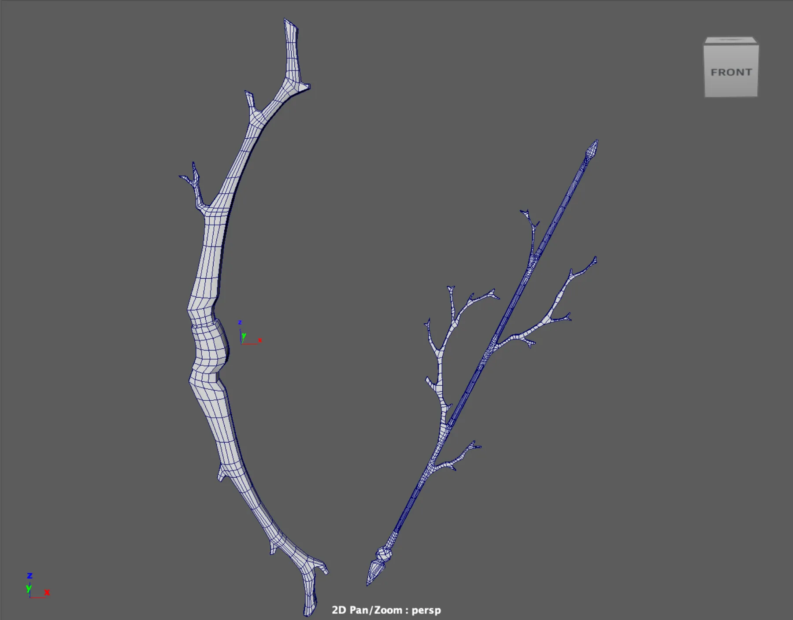
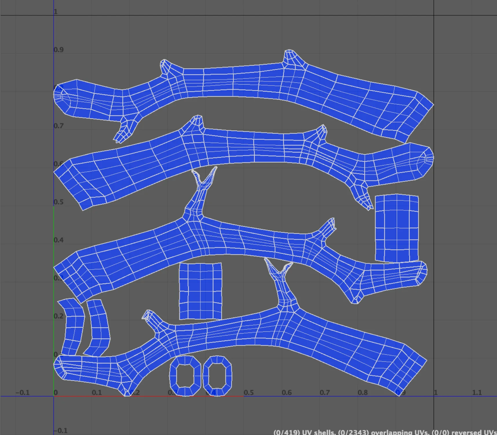
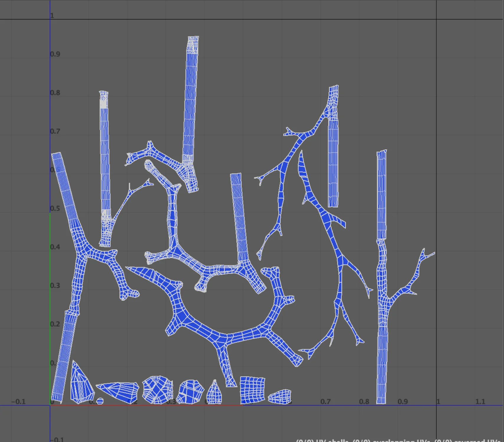
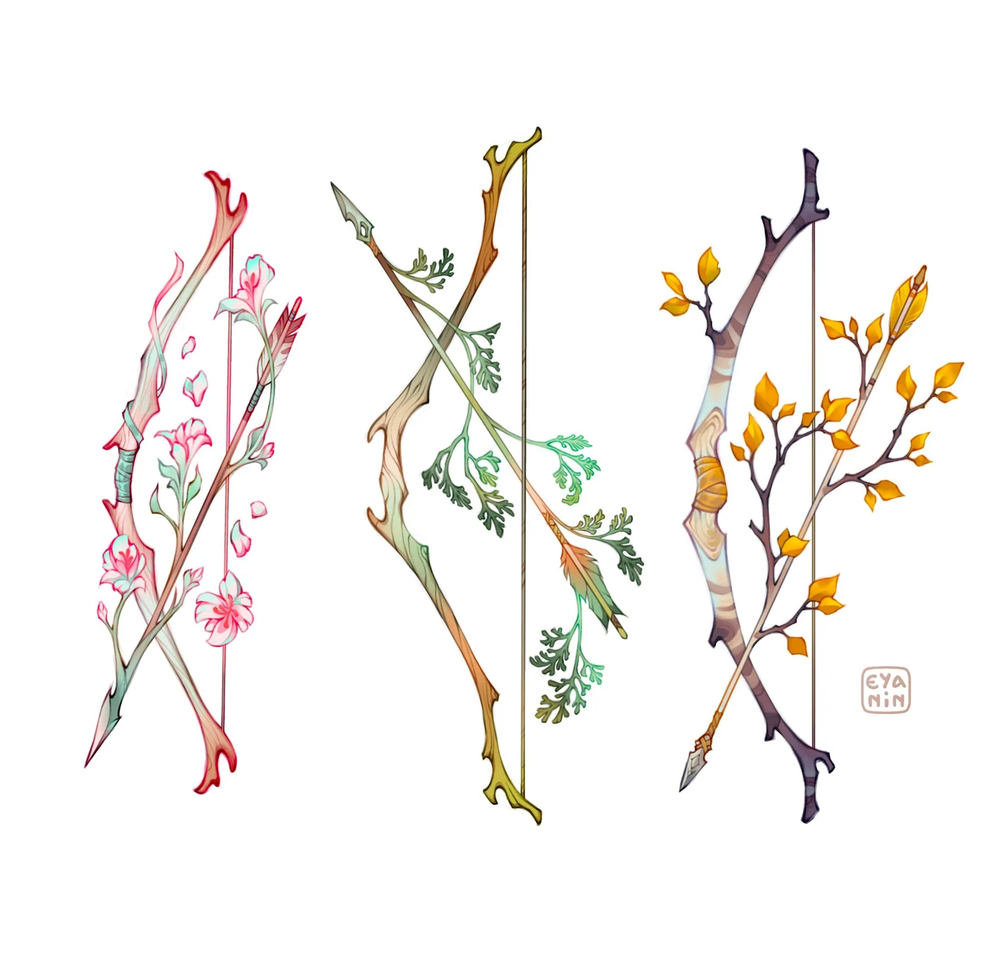

Stylized prop art · 3D modeling case study
Tree-Inspired Bow & Arrow
A nature-inspired prop design that translates twisting branches and bark-like shapes into a stylized bow and matching arrow.
- Focus
- Stylized prop modeling, topology, UV layout, material presentation
- Software
- Maya (modeling and UV screenshots)
- Process
- Visual reference → modeled high-detail forms → low-poly topology → UV layouts → textured renders
Final presentation
The finished prop uses an asymmetrical branch silhouette and wrapped accents to suggest an object crafted from natural materials. The beauty shots present the full bow and arrow together, then isolate the material and shape details.




Modeling process
These untextured views separate the underlying shapes from the final colors. The bow and arrow retain their distinct organic profiles, including knots and smaller offshoots, without relying entirely on surface textures.
Higher-detail model views


Low-poly topology
The wireframes show how the branch curvature and protruding twigs are represented with polygonal geometry. They make it easier to inspect the distribution of edges through bends and narrow sections.


UV layout
The UV screenshots show how the model surfaces were unfolded into islands for texturing. The layout images make the texture preparation visible alongside the final material result.


Visual reference
This external concept reference helped establish the nature-inspired direction. It is presented as reference artwork, not as my original illustration.

What this study demonstrates
This project shows the progression from reference-driven organic shapes to inspectable mesh topology, UV layouts, and a finished textured prop. A useful next step is to document the final triangle count, texture resolution, and a real-time in-engine presentation.
Technical counts and production duration are not provided in the source files, so they have not been estimated.